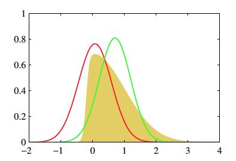
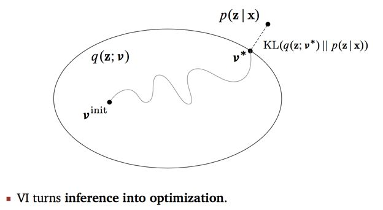

2,806 words in total, 11 minutes required. 本文部分内容总结自引用[1]。 变分推断，是一种在概率图模型中进行概率推断的近似方法。相比于基于采样的随机化方法，变分推断是一种确定性逼近方法。更多关于概率图推断的介绍，可以参见概率图模型总览。 1. 理论知识变分推断的思想的要点可以概括如下： 使用已知的简单分布来逼近需推断的复杂分布； 限制近似分布的类型； 得到一种局部最优、但具有确定解的近似后验分布。 简单地说，原始目标是根据已有数据推断需要的分布$p$；当$p$不容易表达、不能直接求解时，可以尝试用变分推断即，寻找容易表达和求解的分布$q$，当$q$和$p$的差距很小的时候（技术上而言，是KL散度距离最小），$q$就可以作为$p$的近似分布，成为输出结果。 以下先结合文献[2] 15.5.2节中的一个例子来解答下变分推断的学习目标、及其在学习任务中具体的思想和用途。 假定隐变量$\mathbf{z}$直接和$N$个可观测的变量$\mathbf{x} = x_1, \ldots, x_N$相连，那么，所有可观测的变量的联合分布的概率密度函数可以表示为： $p(\mathbf{x} \mid \Theta) = \prod_{i=1}^{N}\sum_{\mathbf{z}} p(x_i, \mathbf{z} \mid \Theta)$ 对数似然可以写为： $\ln p(\mathbf{x} \mid \Theta) = \sum_{i=1}^{N} \ln \{ \prod_{\mathbf{z}} p(x_i, \mathbf{z} \mid \Theta) \}$ 那么，上述例子中的推断和学习任务分别是在给定观测样本$\mathbf{x}$的情况下计算出概率分布$p(\mathbf{z} \mid \mathbf{x}, \Theta)$和分布的参数$\Theta$。 在含有隐变量$\mathbf{z}$时，上述问题的求解可以使用EM算法： E步，根据$t$时刻参数$\Theta^{t}$对$p(\mathbf{z} \mid \mathbf{x}, \Theta^{t})$进行推断，并对以上的联合似然函数$p(\mathbf{x}, \mathbf{z} \mid \Theta)$进行计算； M步，基于E步计算的结果进行最大化寻优，即在$\mathbf{z}$被当前参数和观测确定的情况下，对上述的对数似然求最大化： $\Theta^{t+1} = \arg\max\limits_{\Theta} \mathcal{Q}(\Theta; \Theta^{t}) = \arg\max\limits_{\Theta} \sum\limits_{\mathbf{z}} p(\mathbf{z} \mid \mathbf{x}, \Theta^{t}) \ln p(\mathbf{x}, \mathbf{z} \mid \Theta)$ 上式中，最大化的一项，实际上是对数联合似然函数$\ln p(\mathbf{x}, \mathbf{z} \mid \Theta)$在分布$p(\mathbf{z} \mid \mathbf{x}, \Theta^{t})$下的期望。 当分布$p(\mathbf{z} \mid \mathbf{x}, \Theta^{t})$和变量$\mathbf{z}$的后验分布相等时，上式中最大化的期望值$\mathcal{Q}(\Theta; \Theta^{t})$可以近似于对数似然函数。 因此，通过E步和M步的迭代，最终可以获得稳定参数$\Theta$，从而也可以获得$\mathbf{z}$的分布。 但是，$p(\mathbf{z} \mid \mathbf{x}, \Theta^{t})$未必一定是$\mathbf{z}$的真实分布，而是一个近似值。若将近似分布表示为$q(\mathbf{z})$，则可以有下列公式成立： $\ln p(\mathbf{x}) = \mathcal{L}(q) + \text{KL}(q \parallel p)$$\mathcal{L}(q) = \displaystyle\int q(\mathbf{z}) \ln \{ \frac{p(\mathbf{x},\mathbf{z})}{q(\mathbf{z})} \} \rm{d}\mathbf{z}$$\text{KL}(q \parallel p) = - \displaystyle\int q(\mathbf{z}) \ln \frac{p(\mathbf{z} \mid \mathbf{x})}{q(\mathbf{z})} \rm{d}\mathbf{z}$ 上述公式看起来很复杂，但是试着把后面两个公式带入到上面公式中，就可以发现其实是贝叶斯公式$p(\mathbf{x}) = \frac{p(\mathbf{x}, \mathbf{z})}{p(\mathbf{z} \mid \mathbf{x})}$在符合$q$分布的变量$\mathbf{z}$在积分上的一种表达形式。 接下来，考虑到$\mathbf{z}$可能模型复杂而难以完成E步中$p(\mathbf{z} \mid \mathbf{x}, \Theta^{t})$的推断，此时，就可以借助变分推断，假设$\mathbf{z}$服从一个简单的分布： $q(\mathbf{z}) = \prod_{i=1}^{M}q_i(\mathbf{z}_i)$ 即假设复杂的多变量$\mathbf{z}$可拆解为一系列相互独立的多变量$\mathbf{z}_i$。并且，还可以假设每个分布$q_i$相对简单或有很好的结构。考虑到上述对数似然的形式，我们假设每个分布符合指数族分布（易于积分求解），那么对于每一个独立的变量子集$\mathbf{z}_j$，其最优的分量分布$q^{\star}_j$应该满足： $\ln q^{\star}_j(\mathbf{z}_j) = \mathbb{E}_{i \neq j}[\ln p(\mathbf{x}, \mathbf{z})] + \text{const}$$\mathbb{E}_{i \neq j}[\ln p(\mathbf{x}, \mathbf{z})] = \displaystyle\int p(\mathbf{x}, \mathbf{z}) \prod_{i \neq j} q_i \rm{d}\mathbf{z}_i$$\text{const}$为一个常数。 对上述公式进行转换，可以得到一个最优分量分布（最接近真实情形）的表达式： $q^{\star}_j(\mathbf{z}_j) = \exp (\mathbb{E}_{i \neq j}[\ln p(\mathbf{x}, \mathbf{z})]) / (\displaystyle\int \exp (\mathbb{E}_{i \neq j}[\ln p(\mathbf{x}, \mathbf{z})]) \rm{d}\mathbf{z}_j$ 通过上式可以看出，在对变量$\mathbf{z}_j$的最优分布$q^{\star}_j$估计时，融合了除$\mathbf{z}_j$外其他变量$\mathbf{z}_{i \neq j}$的信息，这是通过联合似然函数$p(\mathbf{x}, \mathbf{z})$在$\mathbf{z}_j$之外的隐变量求期望得到的，因此变分推断也被成为平均场（mean field）逼近方法。 实践中对于变分推断的使用： 首先，对隐变量进行拆解，假设各个分量服从何种分布 再利用上述最优分布求解，对隐变量的后验概率分布进行估计 通过EM方法迭代求解，得到最终概率图模型的推断和参数估计 2. 通过实例进行理解变分推断的思想，即采用简易的分布来近似复杂的隐变量分布，从而实现在观测变量之下，通过EM方法迭代对隐变量和观测变量的联合概率分布的参数估计进行求解。当然，变分推断的公式推导有些难以理解，虽然出现了KL散度的概念，但目前为止，如何实现对其的优化来完成分布的逼近依然没有得到解释，这一节，我们通过对于引用[1]中的回答进行review来进行理解。 2.1 简易理解变分推断中分布逼近的示例 上图中，为了对原始目标分布$p$进行求解，我们选择了两个高斯分布（简易好解释），来分别衡量它们和目标分布的相似性，并选择相似性高的分布来逼近$p$。 2.2 求解思路理解变分推断的步骤： 拥有两部分输入：数据$x$，模型$p(z, x)$ 需要推断的是后验概率$p(z \mid x)$，但不能直接求 构造后验概率$p(z \mid x)$的近似分布$q(z; v)$ 不断缩小$q$和$p$之间的距离直至收敛 - 使用EM算法 以下分别解释下上述4个步骤中重要的问题。 2.2.1 模型和输入确定变分推断要解决的问题，简单来说，专家利用他们的知识，给出合理的模型假设$p(z, x)$，其中包括隐含变量$z$和观察值变量$x$。隐含变量$z$在通常情况下不止一个，并且相互之间存在依赖关系，这也是问题难求解的原因之一。 为了理解隐含变量和观察值的关系，一个很重要的概念叫做“生成过程模型”。我们认为，观察值是从已知的隐含变量组成的层次结构中生成出来的。 以高斯混合模型问题举例。我们有5个相互独立的高斯分布，分别从中生成很多数据点，这些数据点混合在一起，组成了一个数据集。当我们转换角度，单从每一个数据点出发，考虑它是如何被生成的呢？生成过程分两步，第一步，从5个颜色类中选一个（比如粉红色），然后，再根据这个类对应的高斯分布，生成了这个点在空间中的位置。隐含变量有两个，第一个是5个高斯分布的参数$u$，第二个是每个点属于哪个高斯分布$c$，$u$和$c$共同组成隐含变量$z$。$u$和$c$之间也存在依赖关系。 2.2.2 后验概率求解后验概率$p(z \mid x)$即基于现有数据集合$x$，推断隐含变量的分布情况。 利用高斯混合模型的例子来说，就是求得每个高斯分布的参数$u$的概率和每个数据点的颜色的概率$c$。根据贝叶斯公式，$p(z \mid x) = p(z, x) / p(x)$。根据专家提供的生成模型，可知$p(z, x)$部分（可以写出表达式并且方便优化），但是边缘概率$p(x)$是不能求得的，当$z$连续时边缘概率需要对所有可能的$z$求积分，不好求。当$z$离散时，计算复杂性随着$x$的增加而指数增长。 2.2.3 近似逼近后验概率此时需要构造$q(z; v)$，并且不断更新$v$，使得$q(z;v)$更接近$p(z \mid x)$。$q(z;v)$意思是$z$是变量，$v$是$z$的概率分布$q$的参数。所以在构造$q$的时候也分两步，第一，概率分布的选择。第二，参数的选择。 第一步，我们在选择$q$的概率分布时，通常会直观选择$p$可能的概率分布，这样能够更好地保证$q$和$p$的相似程度。 例如高斯混合模型中，原始假设$p$服从高斯分布，则构造的$q$依然服从高斯分布。 第二步，通过改变$v$，使得$q$不断逼近$p$。 变分推断等价于对于KL散度的优化 2.2.4 优化问题的求解优化目标很明确，减小KL散度的值即可。由于KL的表达式中依然有一部分不可求的后验概率，可以使用ELBO（Evidence Lower BOund）来进行替代，ELBO中只包括联合概率$p(z, x)$和$q(z; v)$，从而摆脱后验概率。 $\ln p(\mathbf{x}) = \mathcal{L}(q) + \text{KL}(q \parallel p)$$\mathcal{L}(q) = \displaystyle\int q(\mathbf{z}) \ln \{ \frac{p(\mathbf{x},\mathbf{z})}{q(\mathbf{z})} \} \rm{d}\mathbf{z}$$\text{KL}(q \parallel p) = - \displaystyle\int q(\mathbf{z}) \ln \frac{p(\mathbf{z} \mid \mathbf{x})}{q(\mathbf{z})} \rm{d}\mathbf{z}$ ELBO就是$\mathcal{L}(q)$！！！给定数据集后（$\mathbf{x}$），最小化KL等价于最大化ELBO，因此ELBO的最大化过程结束时，对应获得的$q(z;v^{\star})$，就成为了最后输出。 对于$\mathcal{L}(q)$的最大化，就是对$z$进行拆解、假设其各分量分布简单的情况下完成的。具体推导，可以参见引用[2] 14.5.2节中的内容。 引用1.如何简单易懂地理解变分推断. ↩2.《机器学习》，周志华著，清华大学出版社. ↩ ← Previous Post Next Post→ Table of Contents 1. 理论知识2. 通过实例进行理解2.1 简易理解2.2 求解思路2.2.1 模型和输入确定2.2.2 后验概率求解2.2.3 近似逼近后验概率2.2.4 优化问题的求解引用